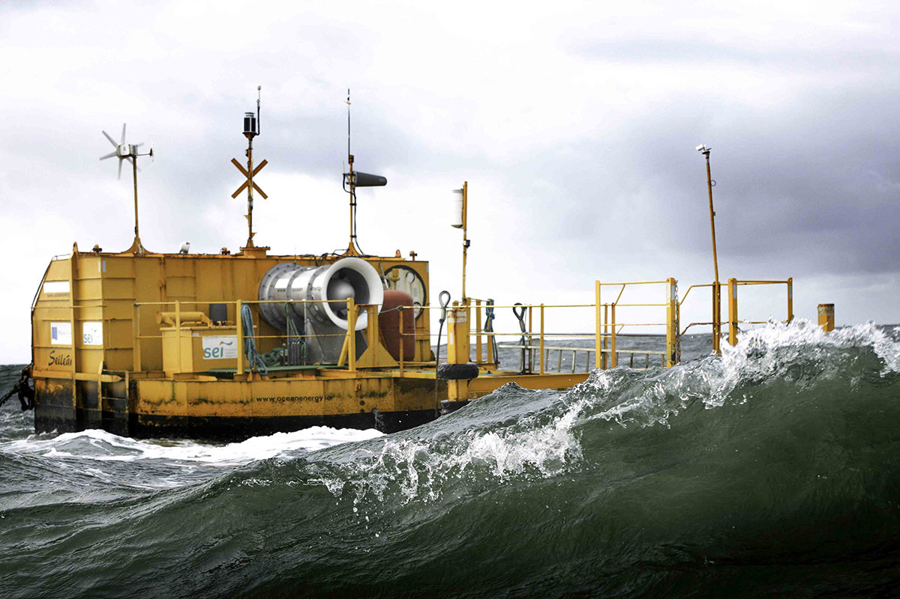
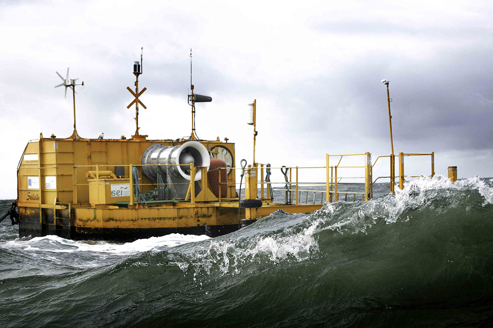

Energía undimotriz
Resumen
Este sistema transforma la energía cinética y potencial de las olas del mar en energía mecánica, neumática (fluidos a presión) o electricidad. El calentamiento desigual de la atmósfera terrestre genera vientos, cuya energía es transferida a la superficie marina. En esta interacción se generan inestabilidades que dan origen a las olas en la superficie. Una de las propiedades de las olas es su capacidad de desplazarse a grandes distancias sin pérdida de energía. En efecto, la energía generada en cualquier parte del océano acaba en el borde continental, concentrando grandes olas en las costas, de acuerdo a la batimetría de cada lugar. La cantidad de energía asociada a una ola depende de varios factores como la velocidad y duración del viento, la profundidad de las aguas, el tipo de costa, el lugar de generación de las olas, entre otros. Tecnologías La energía undimotriz se encuentra en una etapa inicial de desarrollo por lo que aún es difícil estimar cómo progresará con el paso de los años. Esta incertidumbre tiene su origen en el desconocimiento en relación a temas como el comportamiento del oleaje, la transmisión de energía y vida útil de los dispositivos, que dependen de una mantención difícil de realizar debido a la profundidad en la que se pueden ubicar, y del deterioro de los dispositivos por el ambiente salino y el crecimiento de organismos marinos sobre estructuras undimotrices. Sin embargo, esta tecnología es una opción de energía renovable ya que no genera emisiones al aire ni descargas al agua. El oleaje tiene un funcionamiento relativamente predecible por lo que es posible tener un mayor manejo del recurso, logrando una conversión continua de energía renovable. Una manera de diferenciar los variados tipos de tecnologías en desarrollo que aprovechan esta energía es por su ubicación en el mar. Existen las centrales fijas, ubicadas en el borde costero donde se aprovecha la oscilación del oleaje que produce cambios de presión en el aire situado sobre el agua. Esto hace que se expanda y comprima, aprovechándose en el movimiento de una turbina. También están las centrales de agua poco profunda, sistema similar al anterior, pero que se instala a un máximo de 500 metros de distancia de la costa, con profundidades que van desde los 10 a los 30 metros. Esta ubicación es más efectiva por el mayor potencial del oleaje. Por último, están las centrales ubicadas en aguas profundas a más de 50 metros, incrementando el potencial de energía producida. Si bien existen diversos tipos de instalaciones, las más destacadas son las de elementos articulados que se mueven junto a las olas, transformando la energía a través de bombas y/o generadores eléctricos lineales; y las de rampla que aprovechan la caída del agua para generar electricidad.
Galería
 


Estudiantes